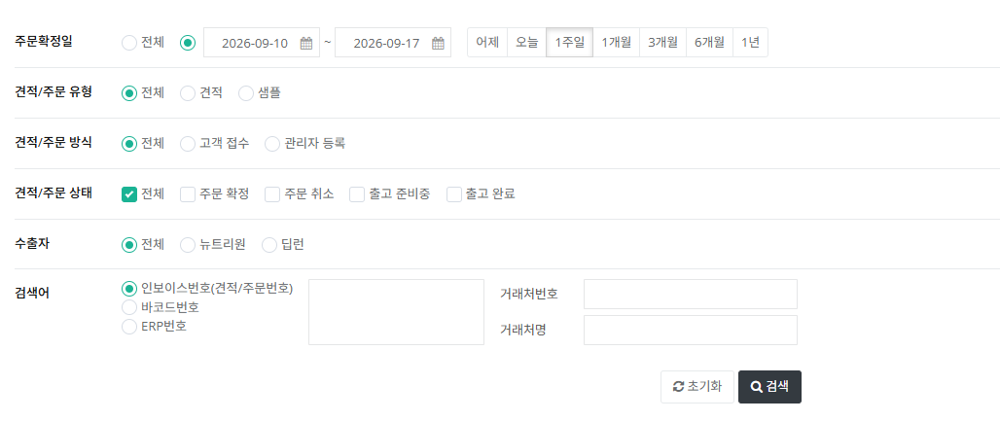
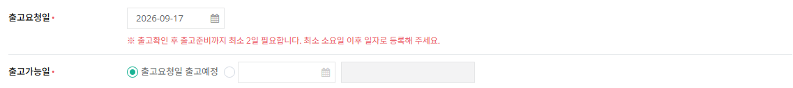
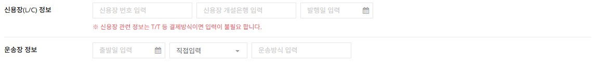
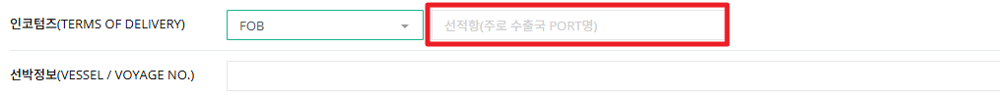
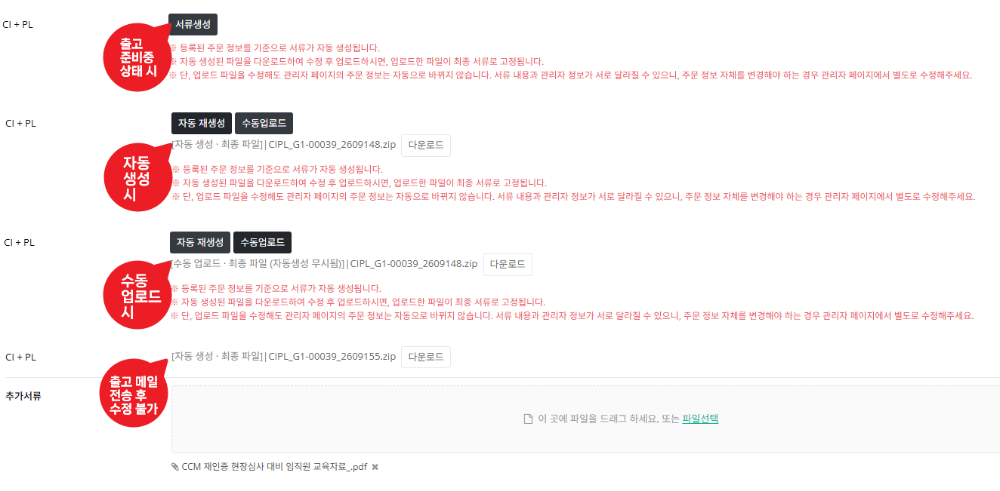
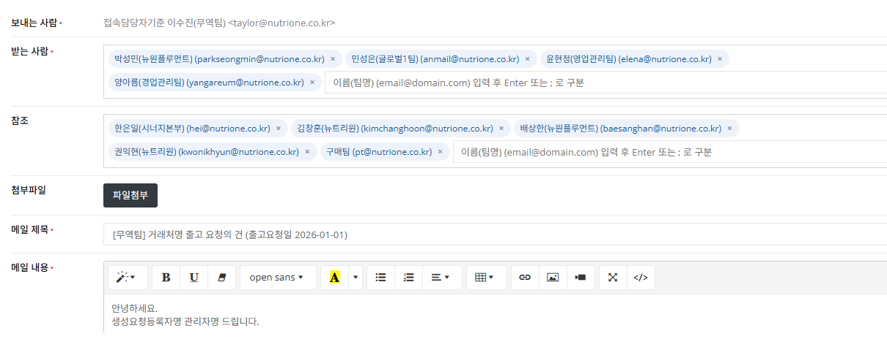

견적에서 주문확정된 건, 또는 관리자가 직접 등록한 주문 건의 출고·운송 정보를 관리하고, CI·PL 등 서류 생성부터 출고 완료까지의 진행 상태를 처리하는 화면입니다.
"출고준비중" 상태 안에서 CI·PL 등 서류 생성 → 발주요청 메일발송(발주) → 운송장 정보 등록 → 자동으로 출고완료 전환 순서로 진행됩니다.
기본은 최근 1주일 주문건만 조회됩니다. 과거 건은 주문일 기간을 "전체"로 바꿔 검색하세요.

주문 등록·상세 화면은 견적과 동일하게 기본정보 / 수출자·수입자 정보 / 출고·운송 정보 / 품목 정보 / 포장·가격 정보 / 서류 정보 6개 영역으로 구성되어 있습니다. 화면 배치와 조작 방법은 견적관리 페이지의 4번 항목과 동일하므로, 참고해주세요.
주문 화면에서 추가로 확인해야 할 부분은 다음과 같습니다.

| 인보이스번호(견적/주문번호) | 견적과 주문은 하나의 번호를 그대로 공유합니다. 상태에 따라 클릭했을 때 연결되는 화면만 견적상세 / 주문상세로 달라질 뿐, 번호 자체는 바뀌지 않습니다. 번호 규칙 : 거래처번호_년월일 6자리 + 숫자 3자리 |
|---|---|
| 출고가능일 | 주문등록 시점에는 보이지 않고, 주문확정 이후에 나타납니다. 기본값은 "출고요청일 출고예정" 문구이며, 별도 날짜를 지정하려면 날짜와 변경 사유를 모두 입력해야 합니다. |

| 운송장 정보 | 출고준비중(발주완료, 즉 발주요청 메일발송 이후) 상태부터만 입력할 수 있습니다. 운송장 정보를 입력해 저장하면 자동으로 상태가 출고완료로 전환됩니다. |
|---|
| 등록 화면 |
등록
아직 저장 전 신규 작성 화면으로, 등록 버튼만 노출됩니다.
|
|---|---|
| 주문확정 상태 |
주문취소출고준비중저장
전체 담당자가 처리할 수 있습니다.
|
| 주문취소 상태 | 버튼이 노출되지 않습니다. 이미 취소로 종료된 건이라 조회만 가능합니다. |
| 출고준비중 (발주 전) 상태 |
주문취소발주요청 메일발송저장
무역팀 · 영업관리팀만 가능 — 아직 물류팀에 발주요청 메일이 전송되지 않은 상태로, 권한 담당자는 아직 정보를 수정할 수 있습니다.
|
| 출고준비중 (발주 후) 상태 |
주문취소운송장 정보 메일발송저장
무역팀 · 영업관리팀만 가능 — 이미 물류팀에 발주요청 메일이 전송된 상태로 모든 정보는 수정이 불가능합니다.
운송장 정보 메일발송 클릭 시 상태가 자동으로 출고완료로 전환됩니다.
|
| 출고완료 상태 |
저장
다른 값은 모두 수정할 수 없지만, 추가서류 항목만 수정 가능하기 때문에 저장 버튼이 남아있습니다.
|

| FOB / FAS | 선적항 (주로 수출국 PORT명) |
|---|---|
| FCA | 지정장소 (예 : INCHEON / BUSAN) |
| EXW | 지정장소 (수출자의 공장, 물류센터) |
| DAP / DDP / DPU | 지정 목적지 (주로 수취인 주소, 공장, 앤드유저 주소) |
| CPT / CIP | 지정된 목적지 (주로 포트) |
| CIF / CFR | 지정목적항 (주로 수입국 PORT명) |
파레트 규격에는 기본값이 없습니다. 종류를 선택해도 값이 자동으로 채워지지 않으므로, 아래 표를 참고해 가로·세로·무게를 직접 입력해야 합니다. 입력한 가로×세로 규격을 기준으로 부피(CBM)가 계산되므로 정확히 입력해주세요.
높이·무게 제한은 앞의 파레트 규격과 달리 기본값이 있는 별도 항목입니다. 필요하면 직접 입력해 값을 바꿀 수 있으며, 입력한 값이 곧 실제 출고 시 물류팀이 파레트를 구성할 때 넘지 않는 상한 기준이 됩니다.
| KPP | 1100 × 1100 mm / 18.5 kg |
|---|---|
| 아주 · 아주(코스트코) · 아주(롯데맥스) · 검정색일반 · 기타 | 1100 × 1100 mm / 14 kg |
| 훈종나무파레트 | 1219 × 1016 mm / 14 kg |
서류 정보 탭에서 생성하는 서류는 CI+PL, 인수증, 추가서류 세 가지이며, 각각 노출·필수 조건과 생성 방식이 다릅니다.
| 노출 시점 | 주문 상태가 "출고준비중"으로 전환되면 항목이 노출됩니다. |
|---|---|
| 생성 없이 발주 가능 (선택) | 포장유형이 카톤이고, 내수거래 여부가 Y이면서 부가세가 과세인 조합인 경우에만 서류 생성 없이 발주 처리가 가능합니다. |
| 생성 필수 | 위 조합 외 나머지 모든 경우는 CI+PL을 생성해야만 발주 처리가 가능합니다. |
| 노출 조건 | 출고동봉서류에서 "인수증"을 체크한 경우에만 노출됩니다. 체크하지 않으면 생성 자체가 불필요합니다. |
|---|---|
| 동작 방식 | 노출된 경우의 생성·발주 조건 및 자동/수동 생성 방식은 CI+PL과 동일하게 적용됩니다. |

| 서류생성 (자동) | 필수 입력값이 모두 채워졌는지 확인한 뒤 버튼을 누르면 화면 입력값 기준으로 자동 생성됩니다. 생성 후에는 재생성 / 수동업로드 버튼이 함께 노출됩니다. |
|---|---|
| 수동업로드 | 디바이스에서 파일을 선택해 직접 올릴 수 있으며, 엑셀 파일만 업로드 가능합니다 (엑셀 외 파일은 업로드 불가 안내). 업로드한 파일이 최종 서류로 고정되고, 등록한 엑셀 파일 기준으로 PDF도 자동 변환되어 함께 제공됩니다. |
| 자동 재생성 | 클릭 시 최종 품목 정보 기준으로 다시 자동 생성됩니다 (수동업로드로 대체했던 경우에도 재생성 가능). |
| 제공 형식 | 생성된 서류는 엑셀(xlsx), PDF 두 가지 형식으로 함께 제공됩니다. |
| 추가서류 | 선택 입력 항목입니다. 여러 파일을 한 번에 드래그로 등록할 수 있고, 등록된 파일은 파일명 기준 가나다순으로 정렬되며 X 클릭 시 바로 삭제됩니다. 등록하지 않아도 발주·출고 진행에는 문제가 없습니다. 단, 주문취소 상태가 되면 등록된 파일은 조회만 가능하며 추가 등록·삭제는 할 수 없습니다. |
| 노출 조건 | 주문 상태가 출고준비중 + 발주상태 발주대기일 때, 권한 대상자(무역팀·영업관리팀) 기준으로만 노출됩니다. |
|---|---|
| 서류 생성 필요 | 버튼을 클릭하려면 서류 생성이 먼저 완료되어 있어야 합니다. CI+PL 서류를 동봉하도록 선택했는데 서류 생성 전에 클릭하면 "생성 필요" 안내만 뜨고 메일폼으로 연결되지 않습니다. |
| 첨부파일 구성 | 포장유형(카톤 / 파레트)에 따라 발송되는 첨부파일이 달라지며, 두 경우 모두 관리자가 선택한 동봉서류 기준으로 첨부됩니다. |
| 정상 처리 시 | 위 조건을 모두 만족하면 메일폼 팝업으로 바로 연결됩니다. |

| 보내는사람 | 메일을 클릭한 담당자 정보 기준으로 자동 출력됩니다. |
|---|---|
| 받는사람 | 주문등록자, 물류팀담당자, 영업관리담당자 기준으로 출력되며 수정 가능합니다. 콤마로 구분해 등록하면 전체에게 전달됩니다. |
| 참조 | 담당 본부장, 주문등록 담당팀 기준으로 출력되며 수정 가능합니다 (콤마 구분 시 전체 전달). |
| 첨부파일 | 동봉서류 선택 첨부 파일은 삭제 불가로 고정 첨부됩니다. 추가서류는 선택적으로 등록해 함께 전송할 수 있습니다. |
| 메일제목 | 말머리는 클릭 대상 팀명으로 자동 출력되며, 거래처명이 함께 채워집니다. 출고가능일이 출고요청일과 같으면 출고요청일, 다르면 출고가능일이 출력됩니다. 필수 입력 항목이며 수정 가능합니다. |
| 메일내용 | 주문정보 기준으로 자동 출력되며 필수 입력·수정 가능합니다. 메일전송 클릭 시점의 담당자 정보, 주문 품목 정보가 출력되고, 포장정보는 체크한 항목만 출력됩니다 (체크하지 않은 항목은 노출되지 않습니다). |
| 취소 | 클릭하면 별도 안내 없이 팝업만 닫히고, 발주완료로 처리되지 않은 채 이전 상태가 그대로 유지됩니다. |
| 메일발송 | 필수 항목 체크 후 전송할 수 있습니다. 클릭하면 "발주요청 메일 발송 시 발주상태가 발주완료로 변경되고 주문정보 수정이 불가능합니다. 발주요청 메일을 발송하시겠습니까?" 확인 팝업이 한 번 더 뜨며, 확인 시 메일 발송 + 팝업 닫힘 + 발주상태 발주완료 전환과 함께 화면이 새로고침됩니다. 취소 시에는 메일이 발송되지 않고 현재 상태가 유지됩니다. |
| 메일명 | 발송 조건 | 발신 | 수신 |
|---|---|---|---|
| 주문요청 메일 | 주문등록 확인 팝업에서 "확인" 선택 시 자동 발송 | 시스템(자동) | 무역팀·영업관리팀 담당자 |
| 출고준비중 전환 안내 메일 | 상태가 "출고준비중"으로 전환될 때 자동 발송 | 시스템(자동) | 주문등록자 + 주문등록자 팀 (본문에 "이 상태부터는 영업 담당자가 주문 정보를 수정할 수 없습니다" 안내 포함) |
| 발주요청 메일 | 관리자가 팝업에서 내용을 편집한 뒤 "메일발송" 클릭 시 수동 발송 | 발송한 관리자 | 주문등록자·물류팀담당자·영업관리담당자(받는사람) + 담당 본부장·주문등록 담당팀(참조) |
| 운송장 정보 메일 (→ 출고완료) | 운송장 정보 입력 후 "운송장 정보 메일발송" 클릭 시 자동 발송 | 시스템(자동) | 주문등록자 + 주문등록자 팀 (운송 정보 포함) |
| 주문취소 안내 메일 | 무역팀/영업관리팀 본인이 아닌 다른 담당자가 주문취소를 처리한 경우에만 자동 발송 | 시스템(자동) | 관련 담당자(무역팀, 영업관리팀, 물류팀, 주문등록자, 주문등록 팀) |